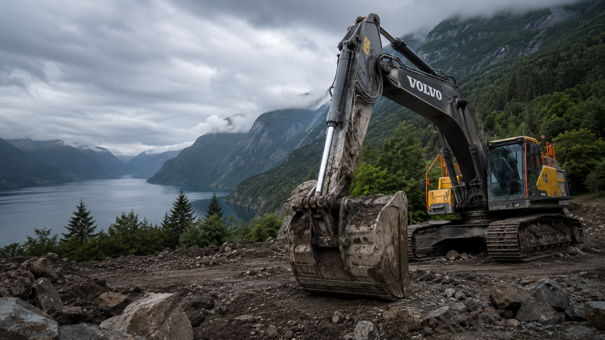
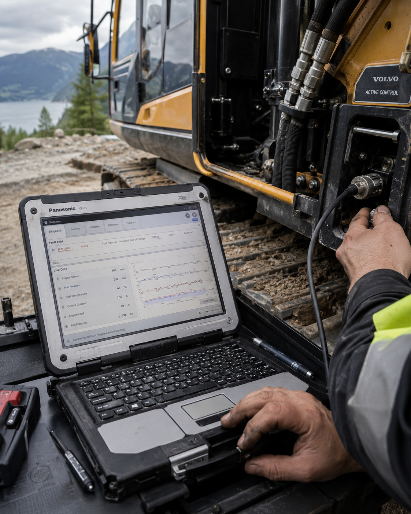
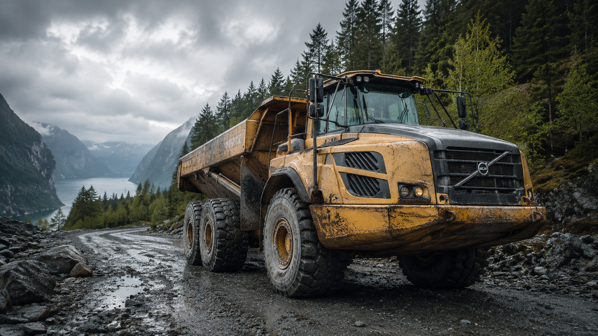
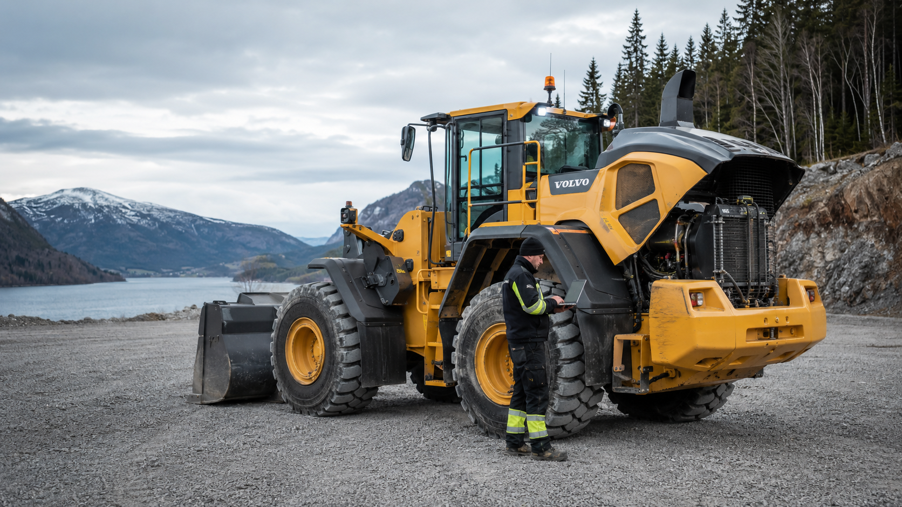
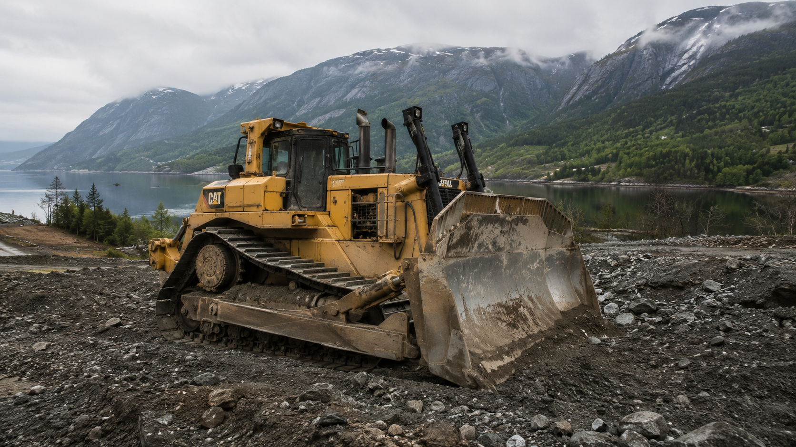
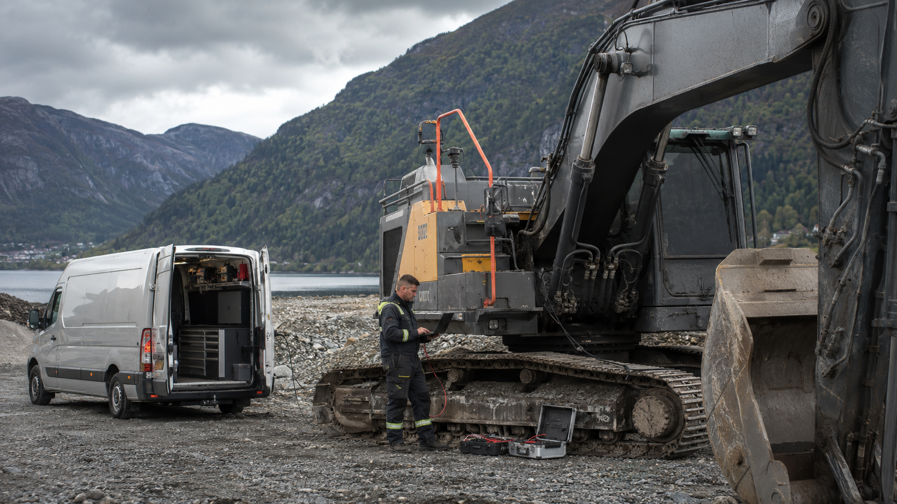

Mobil hjelp på Vestlandet
Maskindiagnose der maskina står
Vi kjem ut til maskina di på Vestlandet. Send merke/modell, symptom og stad, så avklarar vi dekning og omfang før oppmøte.
For gravemaskiner, hjullastarar, dumparar, bulldosarar, traktorar og tunge dieselmaskiner.
Når maskina står, kostar det pengar.
For entreprenørar, maskineigarar, landbruk og industri på Vestlandet.

Når maskina står, stoppar meir enn motoren.
Store maskiner skal ikkje stå stille medan du ventar på tilfeldige delar, usikre feilkodar eller gjetting frå sidelinja.
Maskindiagnose.no tilbyr ambulerande diagnose og feilsøking på anleggsmaskiner, landbruksmaskiner og tunge køyretøy – direkte der maskina står.
Vi hjelper entreprenørar, maskinførarar, bønder og bedrifter med å finne årsaka til feil raskare, redusere unødvendig nedetid og ta betre avgjerder før dyre delar blir bytta.
Mål først. Skru etterpå.
Feilkode er ikkje fasit
Ein feilkode fortel kvar systemet reagerer. Den fortel ikkje alltid kvifor problemet oppstod.
Derfor handlar god diagnose ikkje berre om å lese av feilkodar. Det handlar om å forstå samanhengen mellom motorstyring, sensorar, utsleppssystem, driftshistorikk, belastning og symptoma føraren faktisk opplever.
Vi ser på heilskapen før vi konkluderer.
- Feilkodar
- Livedata
- Sensorverdiar
- Driftssituasjon
- Symptombilde
- Praktisk feilsøking

Dette kan vi hjelpe med
Motorlampe og varsellys
Nødmodus, redusert effekt, feilkodar og gjentakande varsel.
DPF og regenerering
Kontroll av partikkelfilter, differansetrykk, sotbelastning og regenereringsproblem.
EGR-system
Feilsøking på EGR, innsug, luftmengde, temperatur og relaterte sensorverdiar.
AdBlue / SCR / NOx
Diagnose av AdBlue-system, SCR, NOx-sensorar, dosering og etterbehandling.
Les meir om AdBlue-hjelpSensorar og livedata
Tolking av måleverdiar, avvik og samanhengar før dyre delar blir bytta.
Startproblem og effekttap
Feilsøking når maskina er tungstarta, dau, ujamn eller manglar kraft.
Kommunikasjonsfeil
Kontroll av styreeiningar, CAN-kommunikasjon og systemfeil.
Rådgiving før delebytte
Praktisk vurdering før du brukar pengar på feil del.
For store maskiner
Vi kjem ut til deg på Vestlandet og utfører diagnose på maskiner der problemet faktisk er.
Dette er spesielt aktuelt for maskiner der transport til verkstad er dyrt, tungvint eller unødvendig.
- Gravemaskiner
- Hjullastarar
- Dumpere
- Bulldosarar
- Traktorar
- Lastebilar
- Anleggsmaskiner
- Industrimaskiner med moderne dieselmotor



For entreprenørar og bedrifter
Når ei gravemaskin, hjullastar eller dumper står stille, stoppar ikkje berre maskina.
Jobben stoppar. Folk ventar. Framdrifta ryk. Kostnadane kjem uansett.
Derfor er rask og ryddig feilsøking ofte mykje billegare enn å byte delar på mistanke.
Vi hjelper deg å få oversikt:
- Kva seier feilkodane?
- Kva viser livedata?
- Er feilen elektrisk, mekanisk eller systemrelatert?
- Er utsleppssystemet årsak eller symptom?
- Kan maskina køyrast vidare?
- Kva bør verkstad eller mekanikar kontrollere vidare?

Kvifor bruke oss?
Vi kjem til maskina
Du slepp unødvendig transport, venting og logistikk der det er mogleg å feilsøke på staden.
Vi tenkjer praktisk
Dette handlar ikkje om å imponere med datamaskin. Det handlar om å få maskina raskast mogleg tilbake i fornuftig drift.
Teknisk erfaring
Med lang bakgrunn frå mekanikk, bilelektronikk, motorstyring, tuning og diagnose forstår vi både datalista og den praktiske kvardagen ute på jobb.
Vi byter ikkje delar på måfå
Feilkodelesing er berre starten. God diagnose krev måling, tolking og systemforståing.
Typiske situasjonar
Du bør ta kontakt dersom:
- Maskina går i nødmodus
- AdBlue-varsel kjem tilbake
- DPF regenererer for ofte
- Motoren manglar kraft
- Same feilkode kjem igjen etter sletting
- Verkstad har bytta delar utan at feilen forsvann
- Maskina står langt frå verkstad
- Du treng ei vurdering før du brukar meir pengar
Før du ringer
For raskare hjelp er det fint om du har klart:
- Maskinmerke og modell
- Årsmodell
- Motortype viss du veit det
- Timetal
- Bilete av display/feilkodar (valfritt)
- Kort forklaring på symptoma
- Kva som allereie er forsøkt
- Kvar maskina står
Send gjerne bilete eller video av feilmeldingar, display og maskinplate. Bilete er valfritt og kan sendast etter at vi har fått kontakt. Du treng heller ikkje registreringsnummer for å spørje om hjelp.
Område
Vi hjelper kundar på Vestlandet.
Aktuelle område inkluderer mellom anna:
- Bergen
- Bjørnafjorden
- Os
- Askøy
- Øygarden
- Voss
- Hardanger
- Stord
- Kvinnherad
- Nordhordland
- Sunnfjord og omegn etter avtale
Har du maskin som står, ta kontakt – så ser vi kva som er praktisk mogleg.
Diagnose på staden
Maskina står. Vi kjem.
Fortel kort om maskina og problemet. Vi avklarar dekning, omfang og oppmøte med deg.
- Merke/modell og gjerne årsmodell
- Symptom, varsel eller eventuelle feilkodar
- Stad og kor lett maskina er å kome til
Registreringsnummer og bilete er valfrie. Du kan spørje om ei gravemaskin utan skilt og sende bilete etter at vi har fått kontakt.
Be om diagnose på staden
Send det du veit, så tek vi kontakt for å avklare neste steg. Ikkje send sensitive personopplysningar.